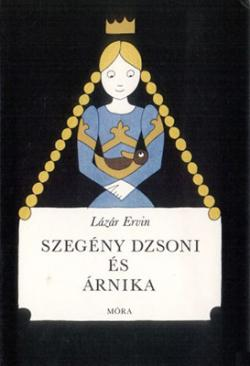

Digitális Irodalmi Akadémia tagja

Bibliográfia
Szakirodalom
Digitalizált művek
Festmény
Fotók
Borítók
Kéziratok
Fontosabb díjak
Ajánlott honlapok
1936. május 5-én született Budapesten. Édesapja Lázár István uradalmi intéző, édesanyja Pentz Etelka. A Tolna megyei Alsó-Rácegrespusztán – ahol a Lázár-család 1951-ig élt – töltötte gyermekéveit. Iskolába a környező falvakba járt. 1950 októberétől a szekszárdi Garay János Gimnáziumban tanult tovább s 1954-ben ott érettségizett. Felsőfokú tanulmányait az érettségi évében kezdte meg a budapesti Eötvös Loránd Tudományegyetem Bölcsészkarán, újságíró szakon. Az Eötvös-kollégiumban lakott. 1956-ban a harmadévesek kötelező szakmai gyakorlatát Nyíregyházán töltötte, majd 1957-ben Pécsre került.
